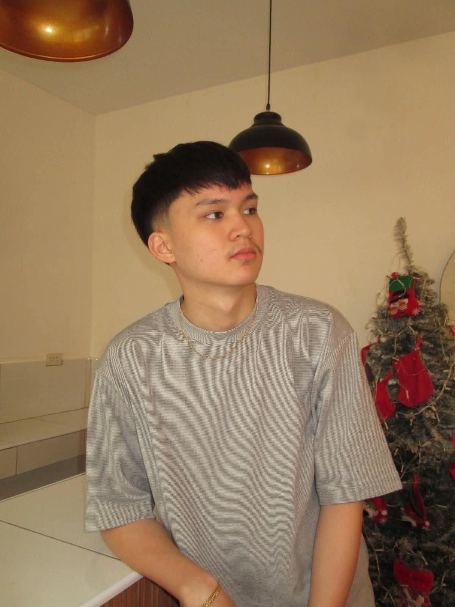
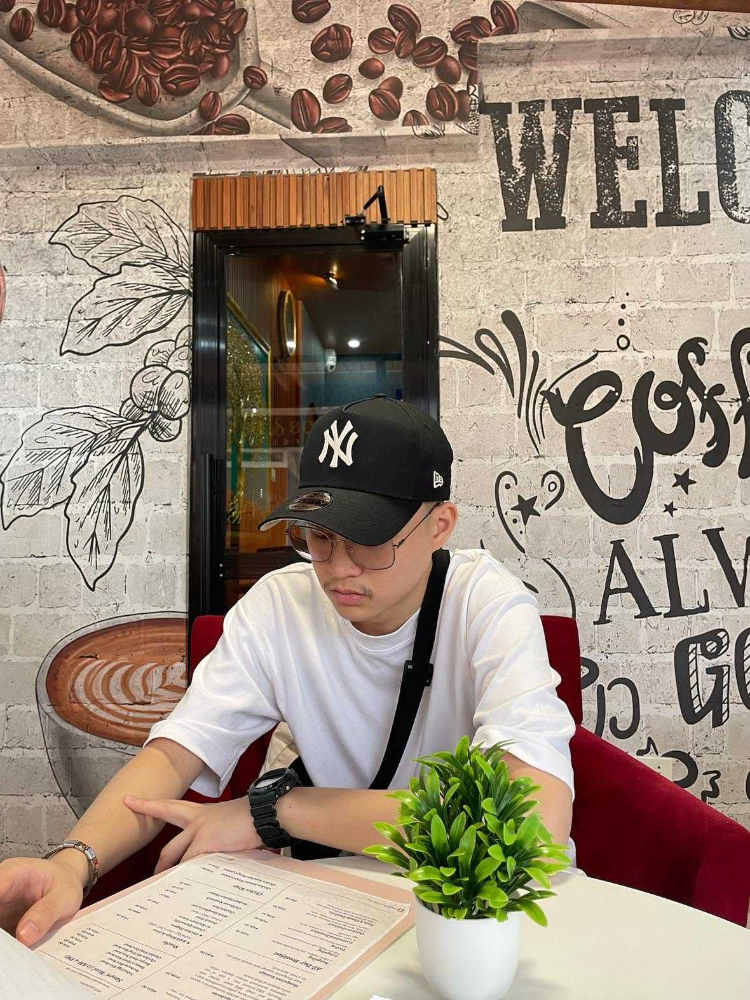
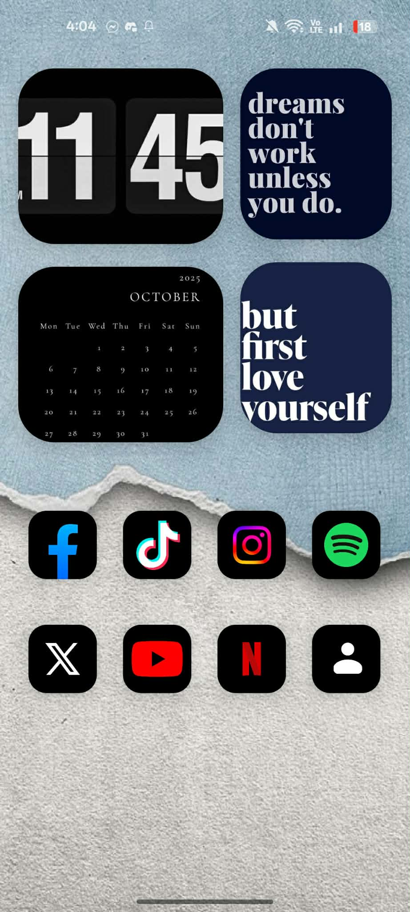
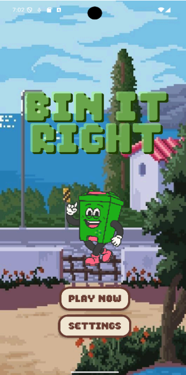

I'm a third-year Bachelor of Science in Computer Engineering student at the University of the East with a passion for technology and continuous learning. I enjoy exploring different areas of computing, building my technical skills, and discovering the career path that best aligns with my interests. My goal is to grow into a professional who creates meaningful solutions through technology while continuously learning and adapting along the way.


I believe that life is about continuously learning, embracing new experiences, and finding opportunities to grow. I enjoy stepping outside my comfort zone, trying new things, and discovering interests that help me become a better version of myself.
Beyond my passion for technology, I value spending quality time with my family and friends. Whether it's sharing meaningful moments, exploring new places, or simply enjoying life's little experiences, I believe that maintaining a healthy balance between personal life and personal growth is important.
I consider myself a detail-oriented, adaptable, and lifelong learner who enjoys taking on new challenges. As I continue exploring different paths in technology and life, I hope to build a future where I can do meaningful work, keep learning, and enjoy the journey along the way.

A simple Android application that introduces who I am, highlighting my background, interests, skills, and goals. This project allowed me to strengthen my understanding of Android app development while creating an interactive personal profile.
Download APK
An Android game designed to promote awareness of the United Nations Sustainable Development Goals (SDGs) through interactive gameplay. This project combines education and technology to encourage users to learn about global sustainability engagingly and enjoyably.
Download APK